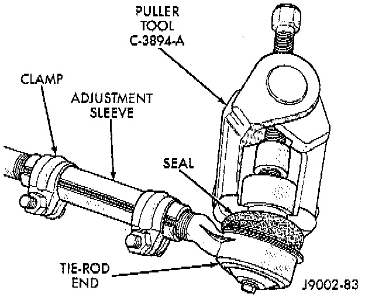
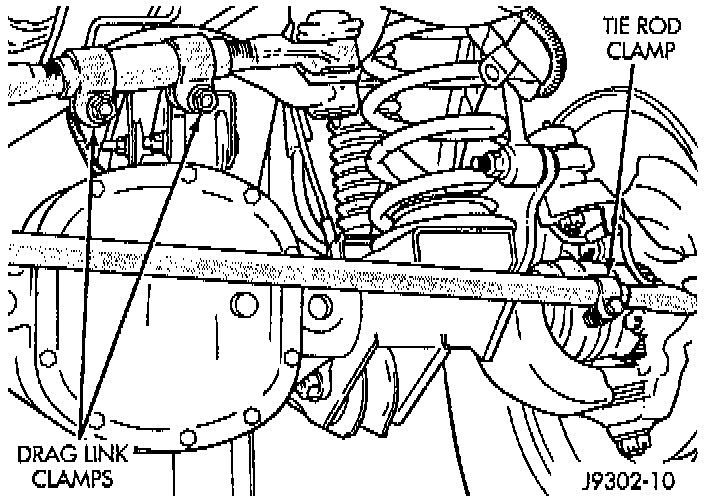

Tie Rod End: Service and Repair

CAUTION: Use a Puller tool C-3894-A, or equivalent for tie rod removal. Failure to use this tool could damage the ball stud and seal.
REMOVAL
1. Remove the cotter pins and nuts at the steering knuckle and drag link.
2. Loosen the ball studs with a puller tool to remove the tie rod.
3. If necessary, loosen the end clamp bolts and remove the tie rod ends from the tube.

INSTALLATION
1. If necessary, install the tie rod ends in the tube. Position the tie rod clamp and tighten to:
- Drag Link: 49 Nm (36 ft. lbs.)
- Tie Rod: 27 Nm (20 ft. lbs.)
2. Install the tie rod on the drag link and steering knuckle. Install the retaining nuts.
3. Tighten the ball stud nut on the steering knuckle to 47 Nm (35 ft. lbs.). Tighten the ball stud nut to drag link to 75 Nm (55 ft. lbs.) torque. Install new cotter pins and bend end 60°.